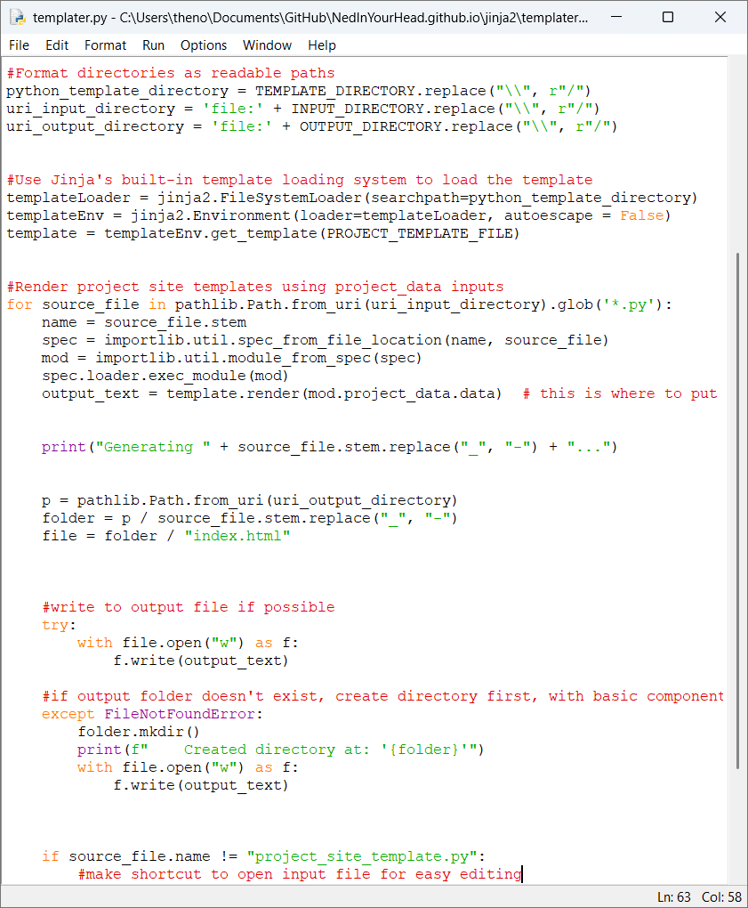
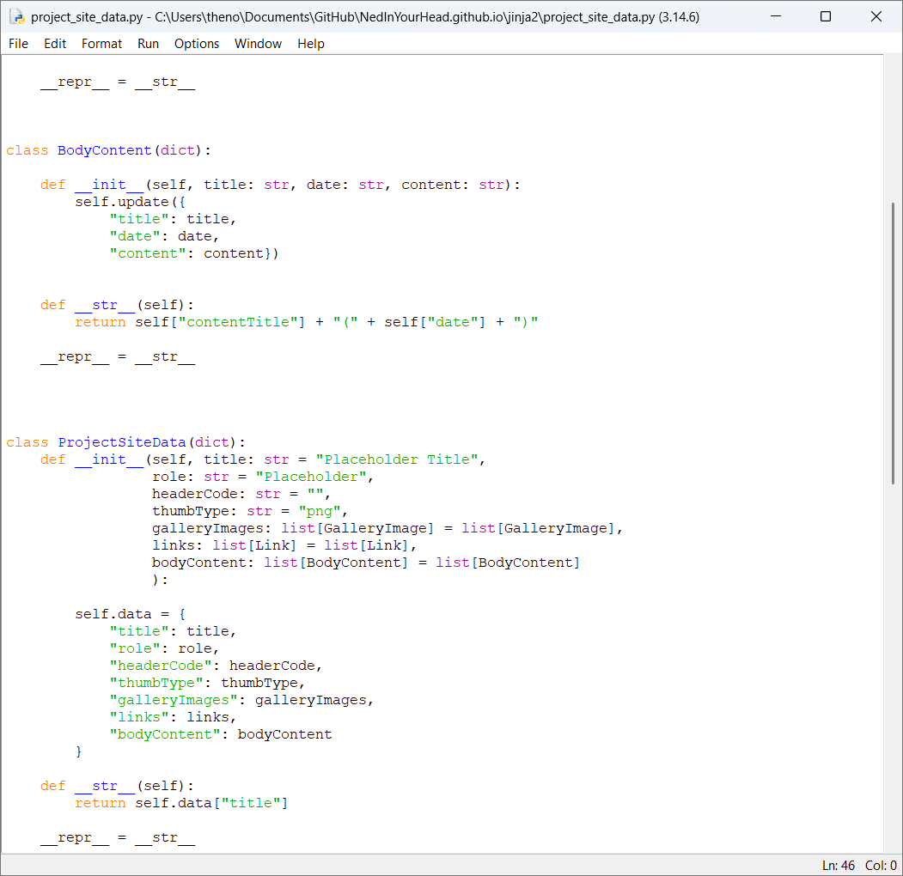
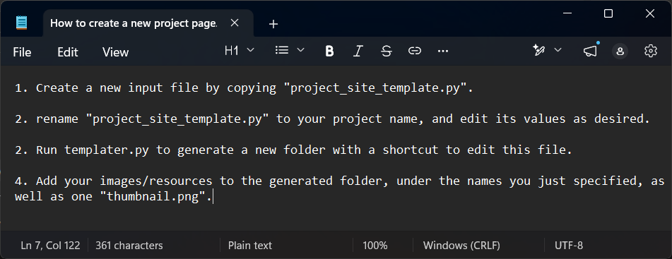

-
After leaving Falmouth, I've decided to overhaul my website workflow to help with scalability issues that have become apparent over time.
Looking into Content Management Systems and Static Site generation during my portfolio project, I quickly realised they would be out of scope in the
week I had to learn the basics of HTML/CSS. Now that I'm looking for work, I thought it'd be a perfect opportunity to polish up my pipeline for creating
new project pages. Moreover, it's become clear that I might want to come back and post new updates under old projects, so I've created a blog-inspired
list of descriptions with dates so I can do just that. I have also decided to migrate to Github Pages for their free hosting and easy integration with
version control, as well as their more permissive policy with regards to external apis. (which should let me do more with the website!)
I landed on Static Site Generation with jinja2 because I felt I only needed the bare-bones functionality of an SSG, and jinja2 gave me a solution which
allowed me to use my existing familiarity with python. Because jinja2 simply outputs to a string, I had total freedom to create a bespoke workflow to fit
my limited needs. My workflow consists of a folder of input files, each of which contain a single class constructor for my "ProjectSiteData" class, which
contains all the information needeed to render my jinja template. It also contains default named parameters, and this means that if I make any additions
to the template in the future, classes can "opt-in" or leave it as a default.
-
Simplicity is a virtue, especially when trying to learn HTML/CSS from scratch with no prior experience!
Luckily for me, these languages are ancient as far as technology goes, and there's a wealth of support and documentation online to help. W3Schools and the
MDN docs were super helpfulin this regard.
When embarking on this journey, my aim was to leverage the compatibility of base HTML and CSS to reduce the amount of maintenance I'd have to do, as well
as to emphasize the stylish,utilitarian visual style I intend to make my trademark.
In order to choose a typeface, I set up two Google Fonts windows side-by-side, and compared fonts to find a pairing that would achieve the
playful-yet-sleek vibe I wanted tocreate - Eventually landing on Freckle Face and Outfit (skipping straight from light to extra-bold weight to emphasize
the difference).
Keeping my website strictly to a main menu and project page, I took extra care to make sure my website's pages were legible and organised no matter the
resolution or device, makingminimal changes between PC and Mobile to increase parity and keep maintenance low.